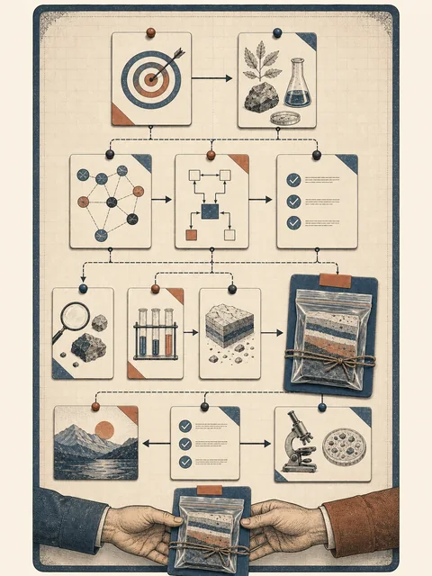

范围不清
大任务没有对象与时间边界；本周只核实一条主张
把 3.1 的节点装进一张可以接手和修改的画布
 VER. 2608.1
Built with impress.js
VER. 2608.1
Built with impress.js
完成本讲后，你应该能够
部门任务：“持续跟踪人工智能技术发展及其企业应用”
本周问题：“Nova 是否支持客户环境部署？”
大任务没有对象与时间边界；本周只核实一条主张
要交付带来源的 supported／unsupported／unknown 判断
核查者整理证据，周会负责人决定是否采用
先把大项目缩成一次能够观察、检查和交接的任务
先选一个能判断质量、能在课堂内观察的任务，再把它写成任务说明
要解决什么问题，结果服务谁
已经拥有的材料、数据、权限和时间窗口
来源、隐私、格式、预算和不可做的事情
使用者凭什么判断结果可以采用
任务说明把愿望变成可判断的任务边界
好的选题让课堂可以讨论结果是否可用
持续跟踪所有 AI 产品与企业应用
周会前核实 Nova 是否支持客户环境部署
来源位置、术语差异、证据缺口与人工采用
缩小范围可以少处理材料，不能把关键质量判断藏起来
画布把任务中的隐含假设变成可检查对象
先让主路径能够从输入走到输出，再补最常见的例外和一个暂时说不清的依赖
让价值从输入走到输出，避免一开始陷入工具细节
下一步要接住一个对象，而不是接住作者脑中的“已经处理过了”
选择最常见的缺口、权限或来源冲突，不列出所有可能异常
把暂时说不清的依赖标出来，带入下一轮检查
例外路径要少而真实，足以暴露流程边界
两条材料线可以同时处理，最后汇合比较
来源缺少正式发布日期，就转到补证据节点
关键字段缺失，回到重新获取材料，而不是继续生成
| 节点 | 留下的中间产物 | 依赖与责任 |
|---|---|---|
| 接收主张 | Nova、客户环境部署、周会用途 | 范围由任务负责人确认 |
| 获取来源 | 官方说明与媒体转述的访问记录 | 原文可定位；获取者 |
| 抽取字段 | 运行位置、访问方式和限制的原文片段 | 统一字段；整理者 |
| 比较来源 | 两条材料都未说明客户环境运行 | 证据关系可追溯；比较者 |
| 形成判断 | unknown 与待补证据 | 周会负责人确认是否继续核查 |
| 交付记录 | 主张、来源、摘录、状态与限制 | 使用者知道当前不能采用原主张 |
画布的价值在于：任何人都能看到判断前留下了什么证据
把作者的默认背景交给画布上的对象

今天先完成一版能被同伴接手的草图
同伴不替作者补背景，而是从画布上随机选一个节点尝试接手
随机选一个节点，复述输入、产物、依赖和责任
标记一个材料、条件、责任或完成标准缺口
作者补对象、改边界或重画关系，并保留修改理由
同伴反馈的目标不是替作者画图，而是让隐藏的假设显形
把真实任务带进课堂时，只带入完成画布所需的最小信息
今天留下的是一版可讨论的过程，下一步要问
哪个节点最容易出错？什么证据能证明它完成了？
工作流先变得可见，才有可能设置检查点、比较方案和决定工具
把真实任务画成可讨论、可修改、可接手的过程
从真实、重复、可判断质量的任务开始
写清目标、使用者、输入、限制和完成标准
先画主路径，再补产物、依赖、责任和一个例外
用能否接手检查画布，把不确定性保留下来
一张好画布不是节点最多，而是别人能够沿着它继续工作